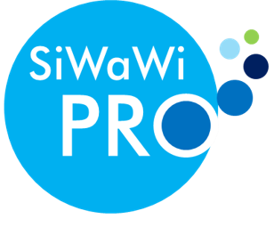

Gruppe der Professor*innen der universitären Siedlungswasserwirtschaft
Die Professoren*innengruppe Siedlungswasserwirtschaft hat sich zum Ziel gesetzt, der ingenieurbasierten, universitären Forschung und Lehre in der Siedlungswasserwirtschaft ein abgestimmtes Mandat zu geben und die Vernetzungen der Akteurinnen und Akteure untereinander zu fördern.
Aktuelle Sprecher der Gruppe (Amtsperiode 2026 - 2028) sind Prof. Dr.-Ing. Stephan Köster (Leibniz Universität Hannover) und Prof. Dr.-Ing. Tobias Morck (Universität Kassel)
E-Mail: koester@isah.uni-hannover.de
E-Mail: morck@uni-kassel.de